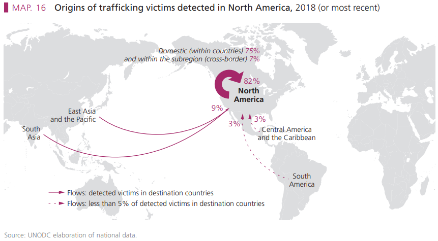

The landscape of human trafficking in North America is complex, characterized by significant intraregional and transregional dynamics. A striking feature of these trafficking flows is that a majority of detected victims in North America specifically the United States are citizens, highlighting the prevalence of domestic trafficking. The data reveals that approximately 75% of victims are trafficked domestically, with only 7% crossing borders from other North American countries. In comparison 9% of victims originate from Asia, while 3% come from both Central America and the Caribbean.
This trend of increasing domestic trafficking is evident in UNODC data spanning 2014 to 2018. Domestic victims made up 47% of the total in 2014, rising significantly to 68% in 2016 and reaching 75% by 2018. Meanwhile, the proportion of cross-border victims from other North American countries dropped from 16% in 2014 to just 7% in 2018. Similarly, victims originating from Central America and the Caribbean decreased from 12% to 3%, while those from Asia fell from 16% to 9%. These shifting patterns highlight the urgent need for targeted intervention strategies to address the escalating issue of domestic trafficking.
These statistics are drawn from the UNODC elaboration of national data from UNODC 2020 Trafficking in Persons Report .
In the United States, approximately 65,971 victims of trafficking have been identified. The gender breakdown reveals a significant disparity: 84% of the victims are female, 15% male, and 1% transgender. Among the identified victims, 51% are U.S. nationals, 18% from Mexico, and 5% China. The accompanying map visually represents the geographic distribution of trafficking cases across the U.S., using color gradients to indicate areas with higher concentrations of victims.
These statistics are drawn from reports collected since 2002 for case management services and since 2015 for hotline services, offering a comprehensive view of trafficking trends over time. To explore the interactive map further, visit the Connecticut Data Collaborative website .